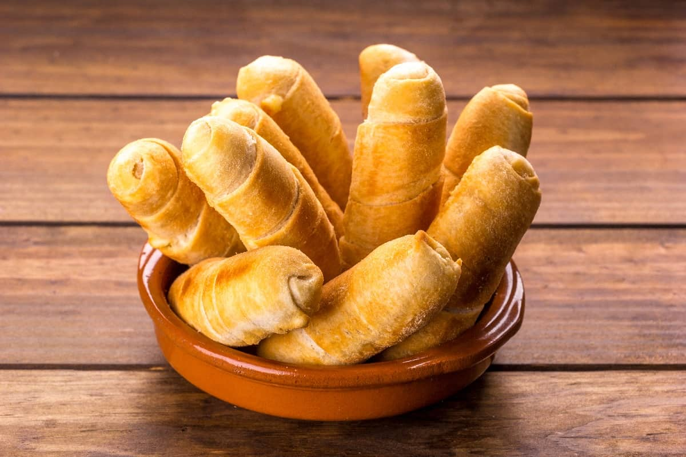

Venezuelan tequeño

Description
Tequeños are a popular meal or snack in Venezuela. They are basically white
cheese sticks wrapped with a crunchy and slightly sweet dough. And as most
delicious things, Tequeños are fried.
Ingredients:
- Flour
- Salt
- Baking powder
- Water
- Vegetable oil or canola oil
- Milk
- Sugar
- Fresh white cheese for frying
- Vegetable oil for frying
Steps:
- Place the flour, salt, and baking powder into the bowl of a stand mixer
with the hook attachment. Mix to combine.
- Add water, vegetable oil, milk, and brown sugar and mix the dough for 5 minutes,
or until the dough is smooth and starts to pull away from the sides of the bowl.
- Press dough into a disc, wrap tightly in plastic wrap, and rest in the refrigerator
for 30 minutes.
- Unwrap dough and place on a lightly floured surface. Knead with your hands until
the dough is very smooth and elastic, about 2 -3 minutes.
- Add more flour over the surface, if necessary, and roll out into a 12 x 15-inch
rectangle 1/8-inch thick. Using a knife, or a pizza cutter, cut the dough into
1-inch wide strips lengthwise to end up with 12 strips.
- Cut the cheese block into 6 equal pieces, and then cut each piece in half
lengthwise; you end up with 12 cheese sticks.
- Take one strip of dough and cover one of the ends of one cheese stick with dough.
Continue to wrap dough around the stick in a spiral fashion, overlapping the edges
until you reach the other end. Cover the other end with dough and pinch edges close
to seal fully. The cheese has to be completely covered with dough. Repeat with
remaining cheese sticks.
- Add 2-inches of oil to a skillet. Heat oil to 350°F over medium heat. When the
oil is hot, cook the tequeños in batches, 2 -3 at a time, turning them until
all sides are golden brown.
- Remove tequeños to a plate lined with paper towels. Let cool for 1 minute, and
serve immediately with guasacasa, garlic sauce, and/or spicy pink sauce.